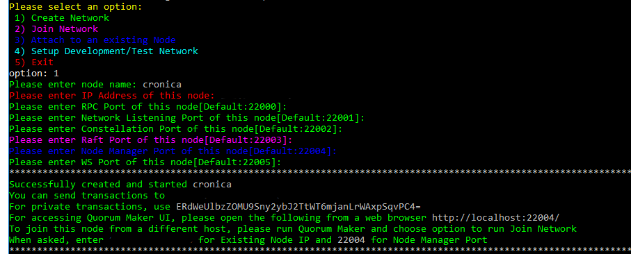
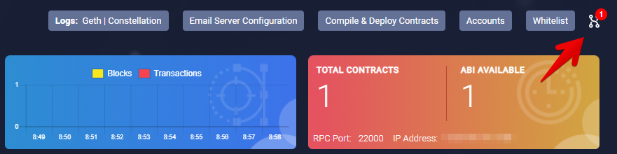
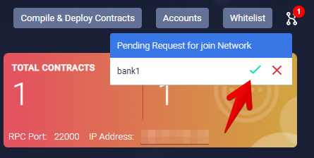
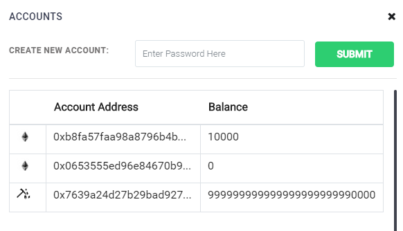
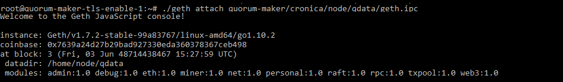
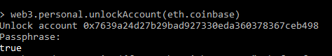
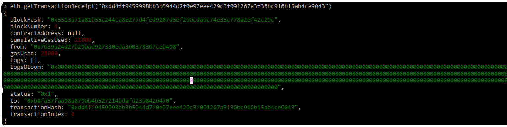

Minimal requirements for server hardware and software:
Instance type: t3.micro, t2/t3 unlimited Storage: EBS volume 200 GB (SSD, GP2)
How to configure first node:
- Connect to the virtual machine based on Ubuntu 16.04 with preinstalled:
sudo apt-get update -y
sudo apt-get install docker.io docker-compose -y;
sleep 2; sudo usermod -a -G docker ubuntu
docker info
docker-compose –version
1.1 git clone https://github.com/cronicaio/quorum-maker.git
1.2 Enter directory of Quorum-Maker service - $ cd quorum-maker
1.3 Run setup script - $ ./setup.sh
2.Set the network parameters, as described below:
2.1 Select "Create new network" - enter " 1" and press [Enter]
2.2 Input the name of the node - Type node_name and press [Enter]
2.3 Input IP address of this node - Type first_node_ip_address (IP address of the current server) and press [Enter]
2.4 Input RPC Port of this node - Type rpc_port_number or press [Enter] for default [Default:22000]
2.5 Input Network Listening Port - Type network_listening_port_number or press [Enter] for default [Default:22001]
2.6 Input Constellation Port - Type constellation_port_number or press [Enter] for default [Default:22002]
2.7 Input Raft Port - Type raft_port_number or press [Enter] for default [Default:22003]
2.8 Input Node Manager Port - Type node_manager_port_number or press [Enter] for default [Default:22004]: "22004"
2.9 Input WS Port of current node - Type WS_node_port or press [Enter] for default [Default:22005]: "22005"

Node configuration screen example for configuration of first node
-
Observe success message
-
Your node started at http://first_node_server_ip_address:22004
if you'll need to restart node after stop, follow next steps:
- Go to node service directory on your server - $ cd ./{node_name}
- Run node execution script - $ .** /start.sh**
How to configure second and other nodes:
- Connect to the virtual machine based on Ubuntu 16.04 with preinstalled:
1.1 git clone https://github.com/cronicaio/quorum-maker.git
1.2 Enter directory of Quorum-Maker service - $ cd quorum-maker
1.3 Run setup script - $ ./setup.sh
- Set the network parameters, as described below:
2.1 Select "Join network" - enter " 2" and press [Enter]
2.2 Input the name of the node - Type node_name and press [Enter]
2.3 Input IP Address of first node - Type first_node_ip_address (IP address of the existing) and press [Enter]
2.4 Input Node Manager Port of first node - Type node_manager_port_number or press [Enter] for default [Default:22004]
2.5 Input IP Address of current node - Type current_node_ip_address (IP address of the existing) and press [Enter]
2.6 Input Network Listening Port of current node - Type network_listening_port_number or press [Enter] for default [Default:22001]
2.7 Input Constellation Port of current node - Type network_listening_port_number or press [Enter] for default [Default:22002]
2.8 Input Raft Port of current node - Type raft_port_number or press [Enter] for default [Default:22003]
2.9 Input Node Manager Port of current node - Type node_manager_listening_port_number or press [Enter] for default [Default:22004]: "22004"
2.10 Input WS Port of current node - Type WS_node_port or press [Enter] for default [Default:22005]: "22005"

Node configuration screen example for joining network node
- Go to http://first_node_server _ip_address : 22004 and accept second node via web interface.


-
Observe notification of successful connection in the node manager web interface of first node
-
Your node started at http://first_node_server_ip_address:22004
if you'll need to restart node after stop, follow next steps:
- Go to node service directory on your server - $ cd ./{node_name}
- Run node execution script - $ .** /start.sh**
Accounts** :**
- Go to the site 1 node http://first_node_server_ip_address:22004
1.1 Press button "Accounts"

1.2 To create a new account you need to come up with a password and click the "Submit" button

1.3 After that the new account appears in the list with the generated key and your password 
1.4 After creating an account, you should refill it
- Connect to our 1 node:
$ ssh root@first_node_server_ip_address
- Download geth client (binary file): cd
mkdir geth_binary
cd geth_binary
wget https://gethstore.blob.core.windows.net/builds/geth-linux-amd64-1.8.15-89451f7c.tar.gz
tar xvzf geth-linux-amd64-1.8.15-89451f7c.tar.gz
cd geth-linux-amd64-1.8.15-89451f7c
cp ./geth ~/geth
cd
rm -r geth_binary
3.1 Attach to the node using command: 
~/geth attach ~/quorum-maker/cronica/node/qdata/geth.ipc
Where ~/quorum-maker/cronica/node/qdata/geth.ipc - path to geth.ipc interface
3.1.1 Now you should unlock the main account for the transfer to the one we the created accounts 
$ web3.personal.unlockAccount(eth.coinbase)
3.1.2 The message about successful unlock should be displayed
3.2 Then you can transfer funds to our created account, Green Vision key transaction

$ eth.sendTransaction({from:eth.coinbase, to:"0xb8fa57faa98a8796b4b527214bdafd23b8426470", value:10000})
3.3 Detailed information about our transaction should be displayed

$ eth.getTransactionReceipt("enter the transaction key")